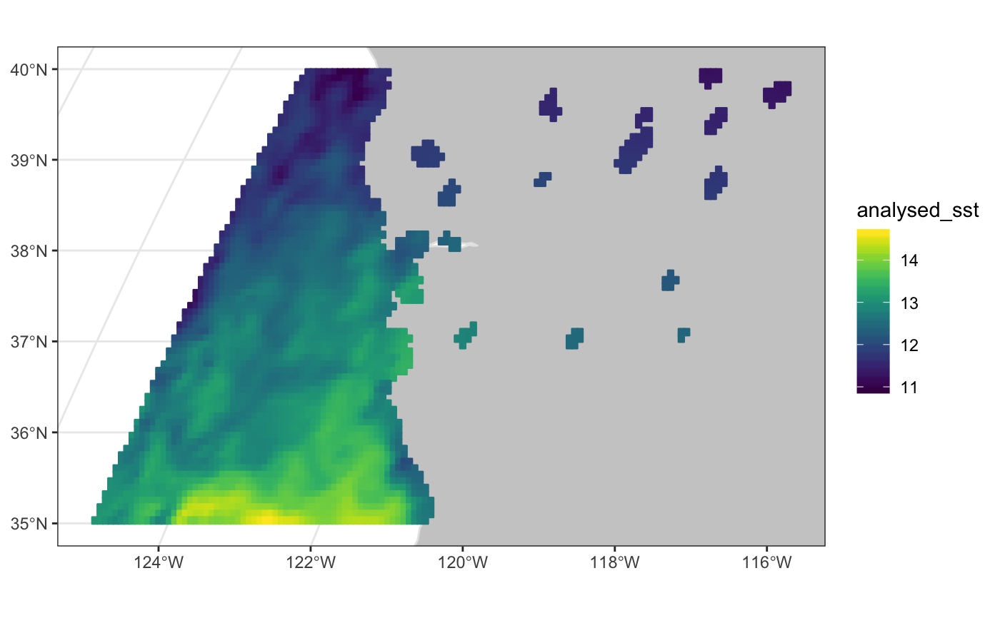
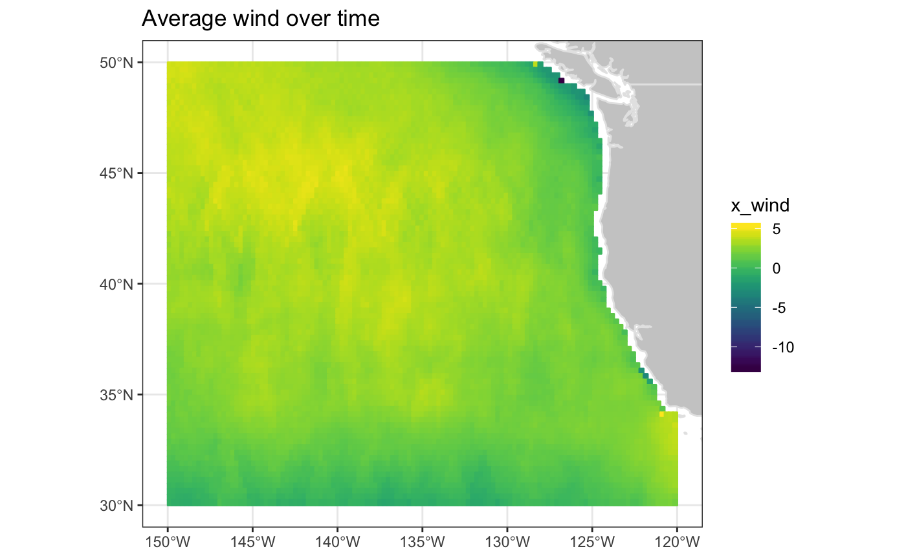

add_griddap adds the data from an 'rerddap::griddap() call to
a 'plotdap' map
add_griddap( plot, grid, var, fill = "viridis", maxpixels = 10000, time = mean, animate = FALSE, cumulative = FALSE, ... )
| plot | a plotdap object. |
|---|---|
| grid | a griddap object. |
| var | a formula defining a variable, or function of variables to visualize. |
| fill | either a character string of length 1 matching a name in the
package |
| maxpixels | integer > 0. Maximum number of cells to use for the plot. If maxpixels < ncell(x), sampleRegular is used before plotting. If gridded=TRUE maxpixels may be ignored to get a larger sample |
| time | how to resolve multiple time frames. Choose one of the following:
|
| animate | whether to animate over the |
| cumulative | - if animation should be cumulative -default FALSE |
| ... | arguments passed along to |
A plotdap object
# base plotting tends to be faster, # but is less extensible plotdap("base") # actual datasets in data folder to meet execution timings # \donttest{ murSST <- griddap( 'jplMURSST41', latitude = c(35, 40), longitude = c(-125, -1205), time = c('last', 'last'), fields = 'analysed_sst' )#> Error in griddap("jplMURSST41", latitude = c(35, 40), longitude = c(-125, -1205), time = c("last", "last"), fields = "analysed_sst"): could not find function "griddap"QMwind <- griddap( 'erdQMwindmday', time = c('2016-11-16', '2017-01-16'), latitude = c(30, 50), longitude = c(210, 240), fields = 'x_wind' )#> Error in griddap("erdQMwindmday", time = c("2016-11-16", "2017-01-16"), latitude = c(30, 50), longitude = c(210, 240), fields = "x_wind"): could not find function "griddap"p <- plotdap(crs = "+proj=robin") add_griddap(p, murSST, ~analysed_sst)#>#>p <- plotdap(mapTitle = "Average wind over time") add_griddap(p, QMwind, ~x_wind)# } p <- plotdap("base", crs = "+proj=robin") p <- add_griddap(p, murSST, ~analysed_sst)#>#>#>p <- plotdap("base") %>% add_griddap(murSST, ~analysed_sst) %>% add_tabledap(sardines, ~subsample_count)#>#>#># multiple time periods p <- plotdap("base", mapTitle = "Average wind over time") p <- add_griddap(p, QMwind, ~x_wind)